1 · Anatomy of the Appendicular Skeleton
Instructional Objectives
- Compare and contrast the bones that make up the appendicular skeleton and their important landmarks.
- Compare and contrast the bones that make up the pectoral girdle.
- Compare and contrast the bones that make up the pelvic girdle.
1.1 · Objective 1 — Bones of the appendicular skeleton and their landmarks
The appendicular skeleton (126 bones) is the two girdles (Objectives 2–3) plus the bones of the limbs. In the upper limb, the humerus is the single arm bone: its rounded proximal head articulates with the glenoid cavity, flanked by the greater and lesser tubercles (rotator-cuff attachments), with the deltoid tuberosity along the shaft and, distally, the capitulum (for the radius) and trochlea (for the ulna) between the coronoid and olecranon fossae. The forearm has the medial ulna (its trochlear notch, bounded by the olecranon and coronoid process, forms most of the elbow) and the lateral radius (its radial head rotates for pronation/supination; radial tuberosity is the biceps insertion), bound by an interosseous membrane. The hand has 8 carpals (proximal row scaphoid-lunate-triquetrum-pisiform; distal row trapezium-trapezoid-capitate-hamate), 5 metacarpals, and phalanges (three per finger, two for the thumb). The lower limb mirrors this: the femur (longest bone — head, neck, greater/lesser trochanters, intertrochanteric line, distal condyles), the sesamoid patella, the weight-bearing medial tibia (tibial tuberosity, medial malleolus), the thin lateral non-weight-bearing fibula (lateral malleolus), and the foot's 7 tarsals (incl. the calcaneus), 5 metatarsals, and phalanges (same 2-for-great-toe / 3-for-others pattern).
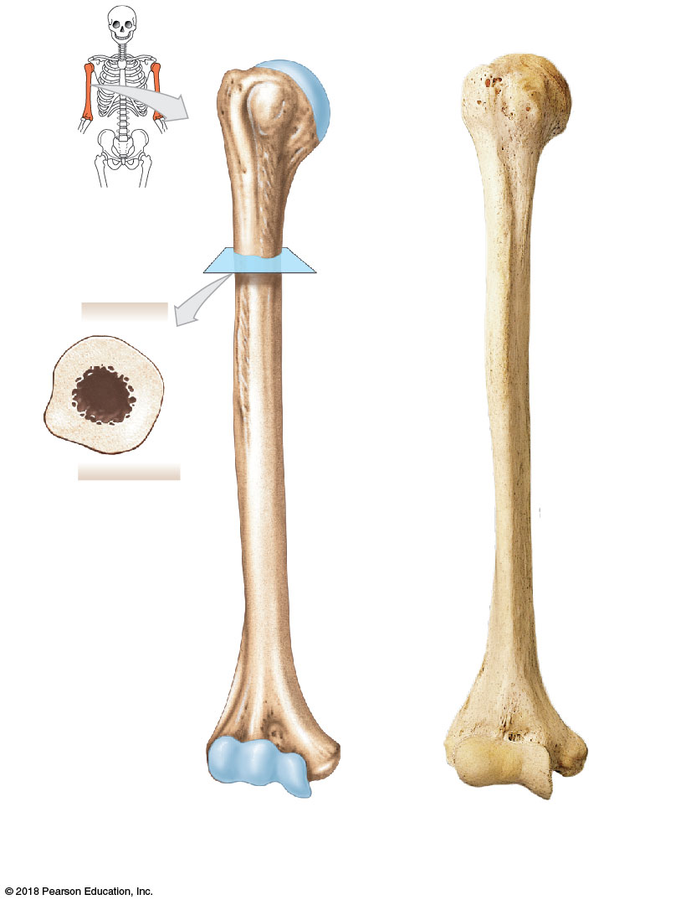
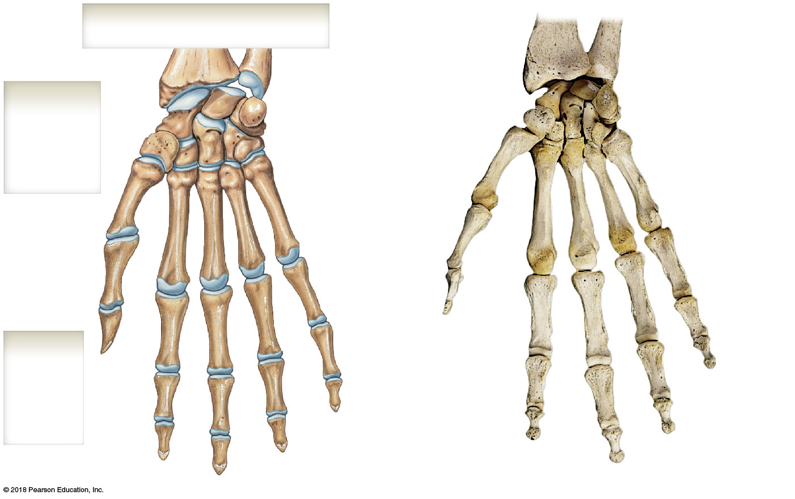
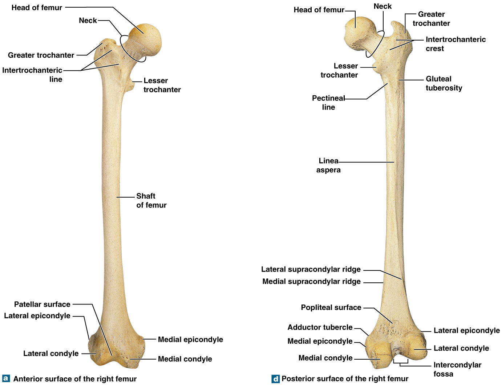
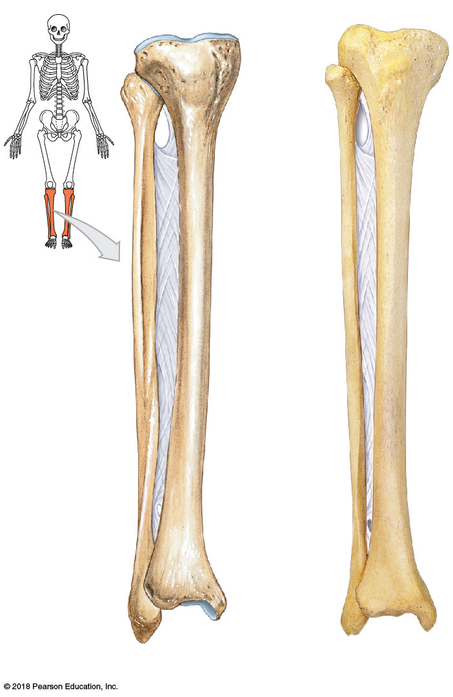
1.2 · Objective 2 — Bones of the pectoral girdle
The pectoral (shoulder) girdle is just two bones — the clavicle and scapula — anchoring the upper limb to the axial skeleton loosely, trading stability for mobility. The clavicle is S-shaped: its medial (sternal) end meets the manubrium, its lateral (acromial) end meets the scapular acromion, with the conoid tubercle near the acromial end and the costal tuberosity near the sternal end. The scapula is a flat triangular bone whose posterior scapular spine divides the supraspinous and infraspinous fossae and continues laterally into the acromion (forming the acromioclavicular joint). The coracoid process hooks forward for muscle/ligament attachment, and the shallow lateral glenoid cavity receives the humeral head to form the glenohumeral joint.
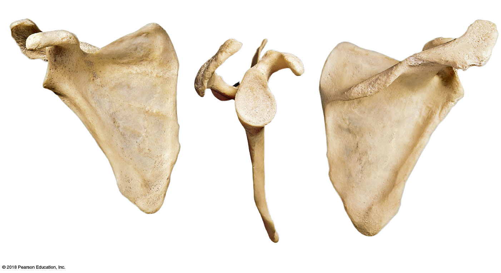
1.3 · Objective 3 — Bones of the pelvic girdle
The pelvic girdle is the two coxal (hip) bones, each a fusion of three bones — the ilium (superior flared wing), ischium (posteroinferior, what you sit on), and pubis (anteroinferior, meeting at the pubic symphysis) — that converge at the deep acetabulum receiving the femoral head. Landmarks include the anterior inferior iliac spine, the greater/lesser sciatic notches, the obturator foramen, and the internal arcuate line and auricular surface (sacroiliac joint). With the sacrum and coccyx, the coxal bones form the bony pelvis. Unlike the mobility-built pectoral girdle, the pelvic girdle is built for weight-bearing stability — and shows a sex difference: the female pelvis is wider and shallower with a larger outlet for childbirth.
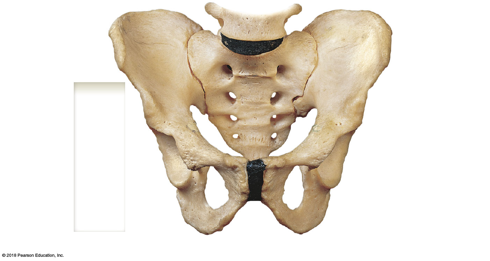
2 · Anatomy of the Axial Skeleton
Instructional Objectives
- Describe the osteon and why it is the structural unit of bone.
- Describe the area of ossification and growth of long bones.
- Compare and contrast trabecular and compact bone.
- Compare and contrast the various types of marrow.
- Identify the bones of the skull.
- Discuss the differences between the cranial bones and the facial bones.
- Identify the cranial foramina and the structures that pass through them.
- Compare and contrast the bones that make up the axial skeletal system and important landmarks.
- Describe the anatomical components of the thoracic cage.
- Compare and contrast the different vertebrae.
- Describe the histology of osseous tissue.
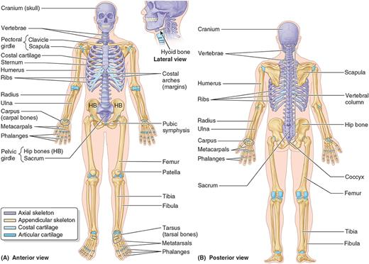
2.1 · Objectives 1, 3 & 11 — Osteon, compact vs. trabecular bone, and osseous histology
Bone tissue comes in two structural forms. Compact bone is dense and solid, forming the outer shell of every bone and bearing most of the mechanical load. Spongy (trabecular/cancellous) bone is a lattice of thin bony struts with large spaces between them, found at the interior of bones (especially near the ends of long bones). A medullary (marrow) cavity — the space where blood cells and platelets are produced — replaces spongy bone at the center of many bones. The entire external surface of a bone (except at joint surfaces) is wrapped in the periosteum, a fibrous connective-tissue covering that carries the blood supply and nerve fibers into the bone and serves as an attachment site for tendons and ligaments.
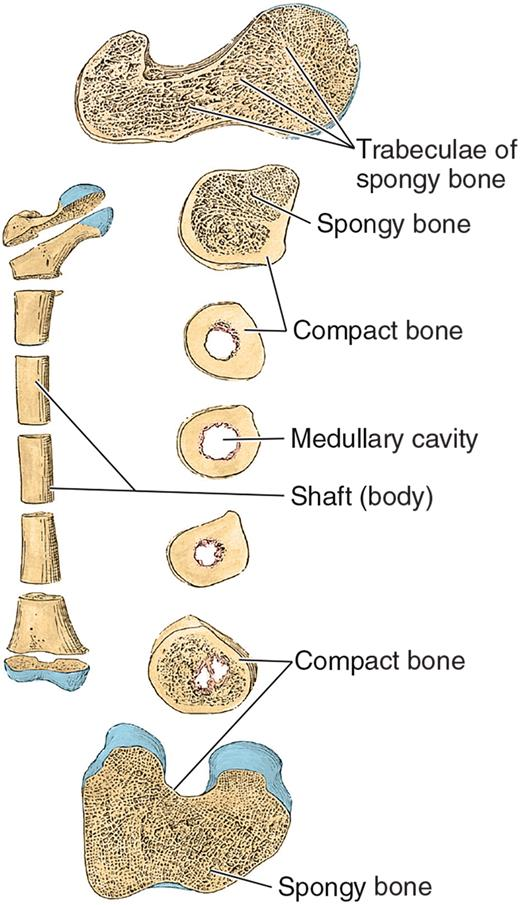
At the microscopic level, compact bone's structural unit is the osteon: concentric rings of bone matrix (concentric lamellae) surrounding a central canal that carries blood vessels and nerves, with perforating canals running perpendicular to connect neighboring osteons and link the whole system to the periosteum's surface vessels. Interstitial lamellae — the remnants of older, partially resorbed osteons — fill the gaps between intact ones.
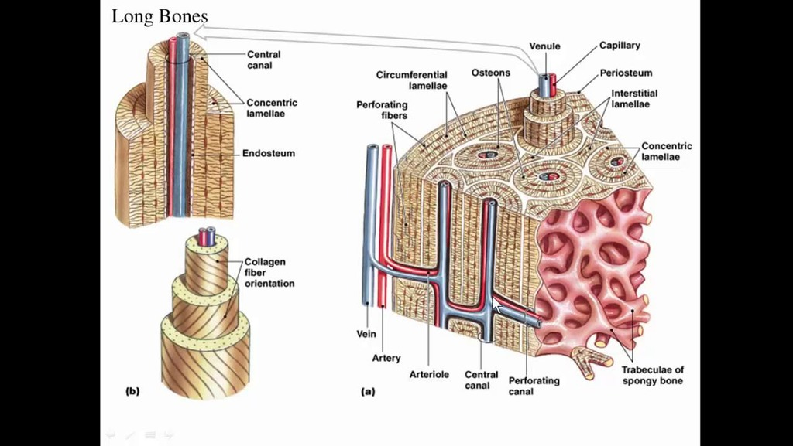
By shape, bones fall into four classes: long bones (tubular — humerus, phalanges), short bones (cuboidal, found only in the wrist and ankle), flat bones (thin and protective — the cranium), and sesamoid bones (develop within tendons to reduce wear — the patella).
2.2 · Objective 2 — Ossification and growth of long bones
Long-bone growth begins at a primary ossification center in the diaphysis (shaft) during fetal development, where bone tissue first replaces the original cartilage model. After birth, secondary ossification centers appear in the epiphyses (bone ends). Between the diaphysis and each epiphysis sits the epiphyseal plate (growth plate) — a layer of hyaline cartilage that is the site of longitudinal bone growth throughout childhood and adolescence, organized into zones (a resting zone of inactive chondrocytes, a proliferative zone of rapidly dividing chondrocytes, a hypertrophic zone of enlarging chondrocytes, and a calcification zone). The plate eventually ossifies completely once growth is finished, fusing the epiphysis to the diaphysis.
2.3 · Objective 4 — Types of marrow
Bone marrow fills the spongy-bone spaces and medullary cavities in two forms. Red marrow is hematopoietic — it produces red blood cells, white blood cells, and platelets — and in adults is found chiefly in the spongy bone of flat and irregular bones (sternum, ribs, vertebrae, ilium) and the proximal epiphyses of the femur and humerus. Yellow marrow is mostly adipose (fat storage) and fills the medullary cavities of long-bone shafts. At birth nearly all marrow is red; much of it converts to yellow with age, but yellow marrow can revert to red under high demand (such as chronic blood loss).
2.4 · Objectives 5 & 6 — Bones of the skull; cranial vs. facial bones
The skull is built from 29 named bones grouped into three categories: 14 facial bones (which shape the face and support the teeth and jaws), 8 cranial bones (which enclose and protect the brain), and 7 associated bones (including the hyoid and the middle-ear ossicles). Most cranial and facial bones are joined by immovable, interlocking joints called sutures — the sagittal suture runs between the two parietal bones, the coronal suture between the frontal bone and the parietals, and the lambdoid suture between the occipital bone and the parietals.
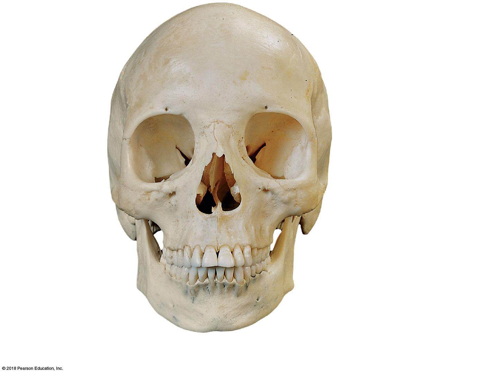
Among the cranial bones: the occipital bone forms the back and base of the skull, pierced by the foramen magnum (through which the spinal cord passes) and bearing the paired occipital condyles that articulate with the atlas (C1). The frontal bone forms the forehead; its supra-orbital foramen transmits the supra-orbital nerve and artery. The temporal bones house the middle and inner ear structures within their petrous portions, and their stylomastoid foramen is the exit point for the facial nerve. The sphenoid, a butterfly-shaped bone at the base of the skull, carries the saddle-shaped sella turcica, which houses the pituitary gland, along with the foramen ovale and foramen spinosum (transmitting branches of the trigeminal nerve). The ethmoid contributes to the nasal cavity and orbit; its crista galli anchors the dural fold called the falx cerebri, and its perforated cribriform plate transmits olfactory nerve fibers from the nose to the brain.
The base of the skull's interior is divided into three stepped depressions — the anterior, middle, and posterior cranial fossae — that cradle the frontal/temporal lobes and cerebellum respectively, with the middle fossa extending from the posterior nasal apertures back to the petrous portions of the temporal bones.
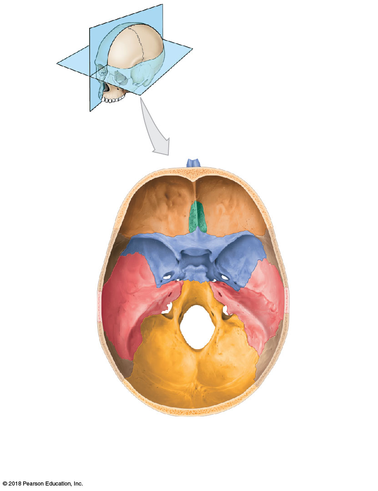
Among the facial bones: the maxillae form the upper jaw and contain the air-filled maxillary sinuses (one of the four paranasal sinuses, alongside the frontal, sphenoidal, and ethmoid sinuses). The vomer and the perpendicular plate of the ethmoid together form the bony nasal septum. The mandible, the only mobile skull bone, articulates with the temporal bone's mandibular fossa at the temporomandibular joint (TMJ) via its condylar process; its coronoid process is a muscle attachment site, and its mandibular foramen/canal carries the neurovascular bundle to the lower teeth, exiting anteriorly at the mental foramen. The hyoid bone, suspended in the neck by ligaments rather than articulating with any other bone, anchors muscles of the tongue and larynx.
The infant skull is not yet fully ossified: membranous gaps called fontanelles — most famously the anterior fontanelle ("soft spot") — sit where sutures will eventually form, allowing the skull to compress slightly during birth and accommodate rapid brain growth afterward.
2.5 · Objective 7 — Cranial foramina and their contents
Each cranial foramen transmits specific neurovascular structures — a high-yield table to memorize:
| Foramen | Bone | Major structure(s) transmitted |
|---|---|---|
| Foramen magnum | Occipital | Spinal cord, vertebral arteries, accessory nerve (XI) |
| Supra-orbital foramen | Frontal | Supra-orbital nerve (V) & artery |
| Optic canal | Sphenoid | Optic nerve (II), ophthalmic artery |
| Superior orbital fissure | Sphenoid | CN III, IV, V1, VI |
| Foramen rotundum | Sphenoid | Maxillary nerve (V2) |
| Foramen ovale | Sphenoid | Mandibular nerve (V3) |
| Foramen spinosum | Sphenoid | Middle meningeal artery |
| Cribriform plate foramina | Ethmoid | Olfactory nerve (I) fibers |
| Stylomastoid foramen | Temporal | Facial nerve (VII) |
| Jugular foramen | Temporal + occipital | CN IX, X, XI; internal jugular vein |
| Mandibular/mental foramina | Mandible | Inferior alveolar/mental nerve (V3) |
2.6 · Objectives 8 & 10 — Bones of the axial skeleton, their landmarks & the different vertebrae
The adult vertebral column contains 26 bones: 24 individual vertebrae (7 cervical, 12 thoracic, 5 lumbar), plus the sacrum (5 fused vertebrae) and coccyx (3–5 fused vertebrae). It encloses and protects the spinal cord, supports the head/neck/trunk, and transfers body weight down to the lower limbs. Viewed from the side, it has four curves — cervical, thoracic, lumbar, and sacral — alternating in direction to balance the trunk over the pelvis; the thoracic and sacral curves are primary (present before birth), while the cervical and lumbar curves are secondary (developing after birth, as an infant learns to hold up its head and then to stand).
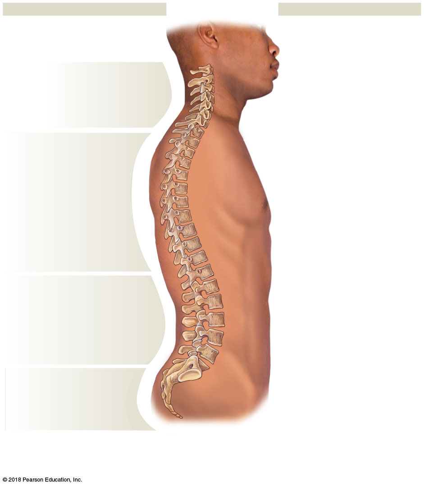
A typical vertebra has an anterior weight-bearing body, separated from its neighbors by a cartilaginous intervertebral disc, and a posterior vertebral arch (made of paired pedicles and laminae) enclosing the vertebral foramen. Stacked vertebral foramina form the vertebral canal housing the spinal cord, while gaps between adjacent vertebrae — the intervertebral foramina — allow spinal nerves to exit. A spinous process projects posteriorly and paired transverse processes project laterally, both serving as muscle/ligament attachment sites, while superior and inferior articular processes let adjacent vertebrae articulate with each other.
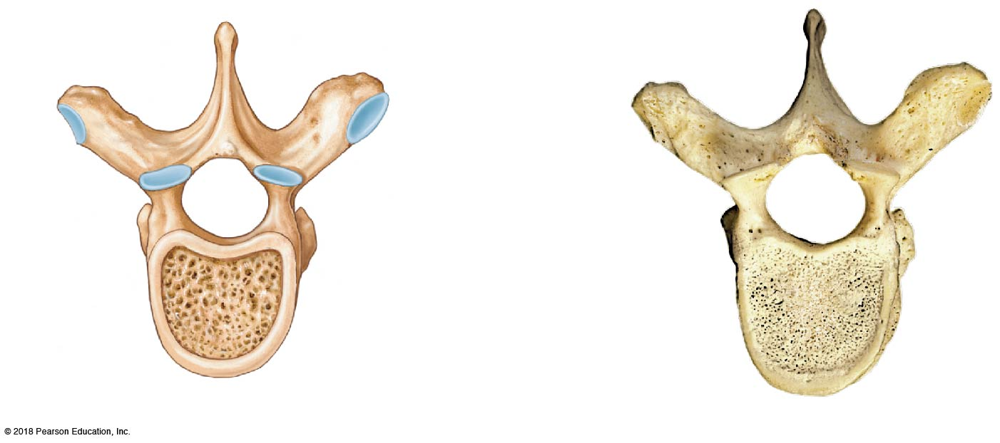
Each region has a distinct signature. Cervical vertebrae (C1–C7) all have a transverse foramen for the vertebral artery and a spinous process that is bifid (forked) except at C7. C1 (the atlas) has no body at all — just anterior/posterior arches — and articulates directly with the occipital condyles, letting the head nod "yes." C2 (the axis) has a peg-like dens that projects up into the atlas's ring, held by the transverse ligament, letting the head rotate "no." C7, the "vertebra prominens," has an unusually long, easily palpable spinous process that anchors the ligamentum nuchae.
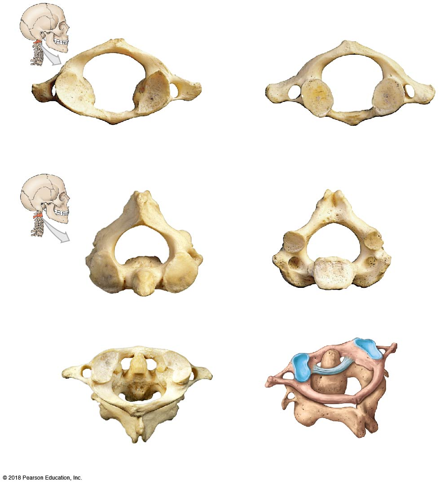
Thoracic vertebrae (T1–T12) carry costal facets for rib articulation (T1–T8 have both superior and inferior facets; T9–T12 have only one) and spinous processes that point sharply inferiorly. Lumbar vertebrae (L1–L5) have the largest, thickest vertebral bodies of the spine — built for weight-bearing — with a spinous process that points straight posteriorly. The sacrum, five fused vertebrae, articulates with the ilium at the auricular surface to form the sacroiliac joint, with landmarks including the sacral promontory, sacral canal, and sacral foramina; the coccyx caps the column below it (angled anteriorly in males, inferiorly in females).
2.7 · Objective 9 — The thoracic cage
The thoracic cage protects the heart, lungs, and thymus, and anchors the muscles of respiration. Its 12 pairs of ribs split two ways: true ribs (1–7) attach directly to the sternum via their own costal cartilage (also called vertebrosternal), while false ribs (8–12) don't — ribs 8–10 (vertebrochondral) attach indirectly via shared cartilage, and ribs 11–12 ("floating ribs") have no anterior attachment at all. The sternum itself has three parts: the manubrium (superior, with the palpable jugular notch and clavicular articulations), the body, and the xiphoid process (the inferior cartilaginous/bony tip).
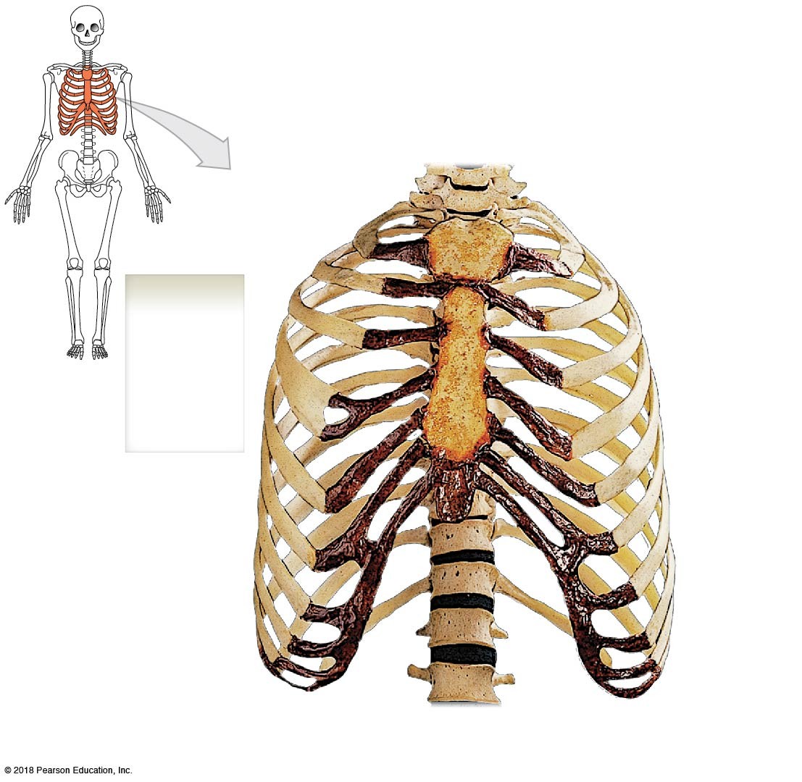
3 · Appendicular Musculature
Instructional Objectives
The syllabus lists a single combined objective set for Axial & Appendicular Musculature Anatomy. Objectives 1–7 and 9 (muscle-tissue fundamentals and the axial/appendicular distinction) are answered here; Objective 8 is answered for the appendicular muscles here and for the axial muscles in Section 4.
- Compare and contrast the connective tissue coverings of muscles.
- Describe the components of muscle.
- Compare and contrast the histology of the three types of muscle tissue.
- Differentiate between the axial and appendicular muscles.
- Compare and contrast the different morphologies of muscles.
- Compare and contrast the anatomical structures that are involved in muscle contraction.
- Describe the structures that make up the neuromuscular junction.
- Identify origin, insertion, innervation, blood supply, and lymphatic drainage of muscles.
- Describe the innervation of striated muscle.
3.1 · Objective 1 — Connective tissue coverings of muscles
Three nested connective-tissue layers organize a skeletal muscle: the epimysium wraps the whole muscle, the perimysium wraps bundles of fibers called fascicles, and the endomysium wraps each individual muscle fiber (whose plasma membrane is the sarcolemma). These layers are continuous with and converge into the tendon (a cord) or aponeurosis (a flat sheet) that attaches the muscle to bone, while the surrounding deep fascia binds muscle groups into compartments.
3.2 · Objective 2 — Components of muscle
A skeletal muscle is built as a nested hierarchy: muscle → fascicles → muscle fibers (long, multinucleate cells) → myofibrils → sarcomeres (the functional contractile unit). Within each fiber, the sarcoplasm contains the sarcoplasmic reticulum (stores calcium), T-tubules (carry the impulse inward), and abundant mitochondria. Each sarcomere contains overlapping thick filaments (myosin) and thin filaments (actin), whose ordered overlap produces the striated appearance.
3.3 · Objective 3 — Histology of the three muscle types
The three muscle tissues differ histologically. Skeletal muscle has long, cylindrical, striated, multinucleate fibers and is voluntary. Cardiac muscle has short, branching, striated, usually uninucleate cells joined end-to-end by intercalated discs and is involuntary. Smooth muscle has spindle-shaped, non-striated, uninucleate cells in the walls of hollow organs and vessels and is involuntary.
3.4 · Objective 5 — Muscle morphologies
Muscles are classified by the arrangement of their fascicles, which trades force against range of motion: parallel/fusiform (fascicles run with the long axis — biceps brachii; more shortening/range), convergent (broad origin narrowing to one tendon — pectoralis major), pennate (feather-like around a central tendon — unipennate, bipennate, or multipennate as in the deltoid; more force), and circular/sphincter (concentric rings closing an opening — orbicularis oris).
3.5 · Objective 6 — Structures involved in muscle contraction
Contraction occurs within the sarcomere, bounded by Z-discs. The thin actin filaments (with regulatory troponin and tropomyosin) slide over the thick myosin filaments as myosin heads form cross-bridges — the sliding-filament mechanism, powered by ATP. The trigger is calcium released from the sarcoplasmic reticulum when the action potential travels along the sarcolemma and down the T-tubules, exposing actin's binding sites.
3.6 · Objective 7 — The neuromuscular junction
The neuromuscular junction (NMJ) is the synapse where a motor neuron meets a muscle fiber. The presynaptic axon terminal releases acetylcholine (ACh) from synaptic vesicles across the synaptic cleft; ACh binds nicotinic receptors on the folded postsynaptic motor end plate of the sarcolemma to trigger contraction, and is then broken down by acetylcholinesterase to end the signal. Schwann cells cap and support the junction.
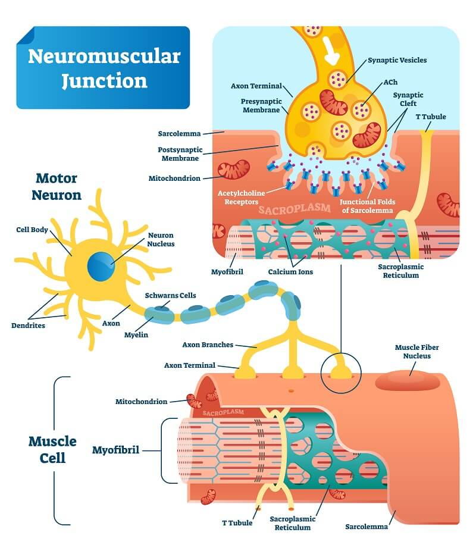
3.7 · Objective 9 — Innervation of striated muscle
Striated skeletal muscle is voluntary, innervated by somatic motor neurons whose cell bodies sit in the spinal cord's ventral horn (or cranial-nerve motor nuclei). One motor neuron plus all the muscle fibers it innervates is a motor unit — small units (few fibers) allow fine control, large units produce powerful force. The neuron signals its fibers by releasing ACh at the NMJ, and graded whole-muscle force is achieved by recruiting more motor units.
3.8 · Objective 4 — Differentiating axial and appendicular muscles
Skeletal muscle divides by what it moves. Axial musculature has both origin and insertion on the axial skeleton — it positions the head and vertebral column and moves the rib cage (covered in Section 4). Appendicular musculature stabilizes and moves the limbs and girdles, absorbing shock during locomotion and reinforcing the joints. A muscle's action line relative to a joint predicts its effect: crossing the anterior aspect gives flexion, the posterior aspect extension, the medial aspect adduction/medial rotation, and the lateral aspect abduction/lateral rotation.
3.9 · Objective 8 (appendicular) — Origin, insertion, innervation & supply of the pectoral girdle and upper limb
Muscles that position the pectoral girdle — trapezius, rhomboid major/minor, levator scapulae, serratus anterior, pectoralis minor, subclavius — coordinate with the muscles that move the arm itself. The trapezius has the broadest range, able to elevate, depress, and rotate the scapula/clavicle and extend the neck. The serratus anterior protracts the shoulder and rotates the scapula so the glenoid cavity faces upward; it's innervated by the long thoracic nerve, and a lesion there causes serratus anterior paralysis (a "winged scapula").
Muscles that move the arm at the shoulder include the prime movers — pectoralis major (flexion, adduction, medial rotation), deltoid (abduction), coracobrachialis (adduction), and latissimus dorsi (extension, adduction, medial rotation) — plus the four rotator cuff muscles that stabilize the humeral head in the glenoid cavity: supraspinatus (abduction), infraspinatus (lateral rotation), teres minor (adduction, lateral rotation), and subscapularis (medial rotation).
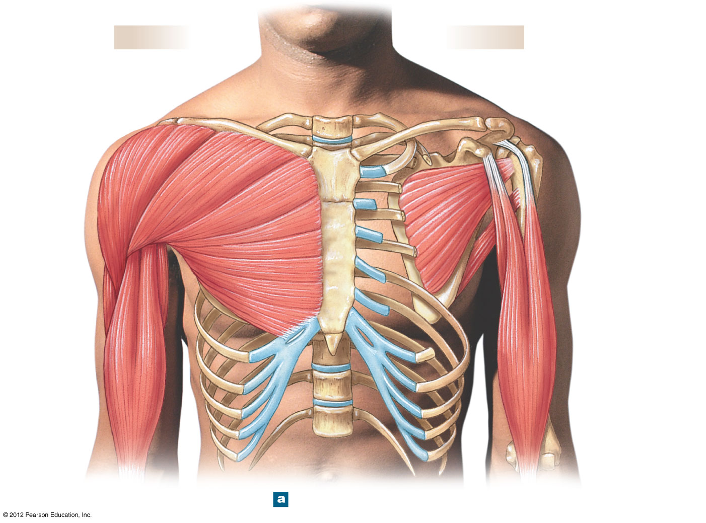
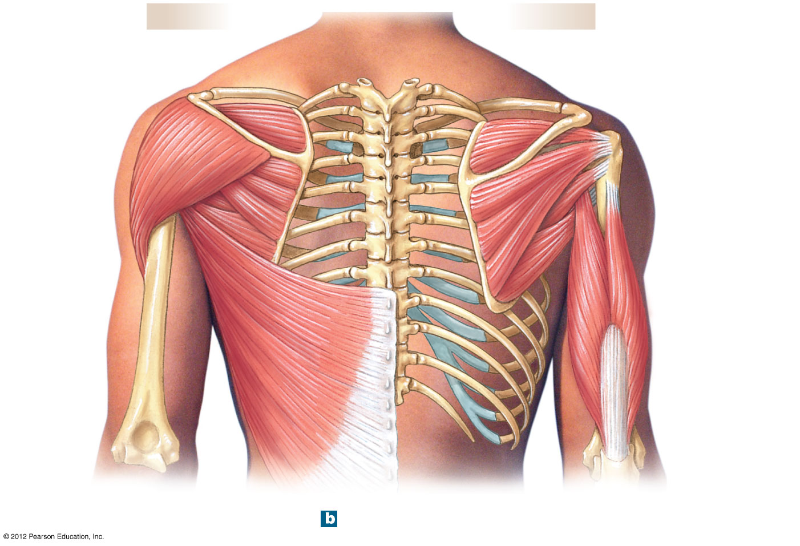
Most muscles that move the forearm and hand originate on the humerus (elbow flexors biceps brachii, brachialis, brachioradialis; the elbow extensor triceps brachii, all three heads inserting on the ulna's olecranon; and the pronator/supinator pairs pronator teres/pronator quadratus versus supinator). The wrist flexors (flexor carpi radialis, flexor carpi ulnaris, palmaris longus) and extensors (extensor carpi radialis longus/brevis, extensor carpi ulnaris) are named for their side-to-side action (radial = abduct, ulnar = adduct) as well as flexion/extension. Hand muscles split into extrinsic (large, originate in the forearm, provide strength and crude control — the flexor/extensor digitorum and pollicis groups) and intrinsic (small, live within the hand itself, provide fine control — thenar muscles like opponens pollicis, hypothenar muscles like abductor digiti minimi, plus the lumbricals and interossei that fine-tune finger flexion/extension and abduction/adduction).
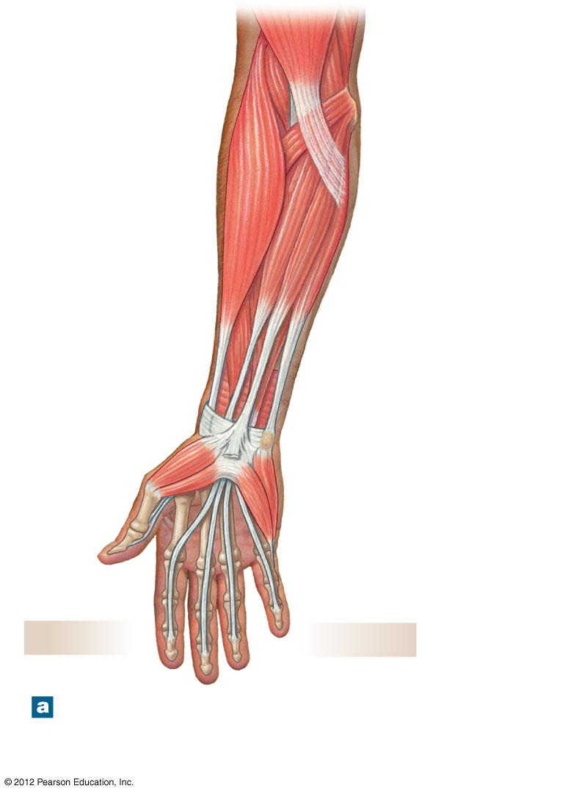
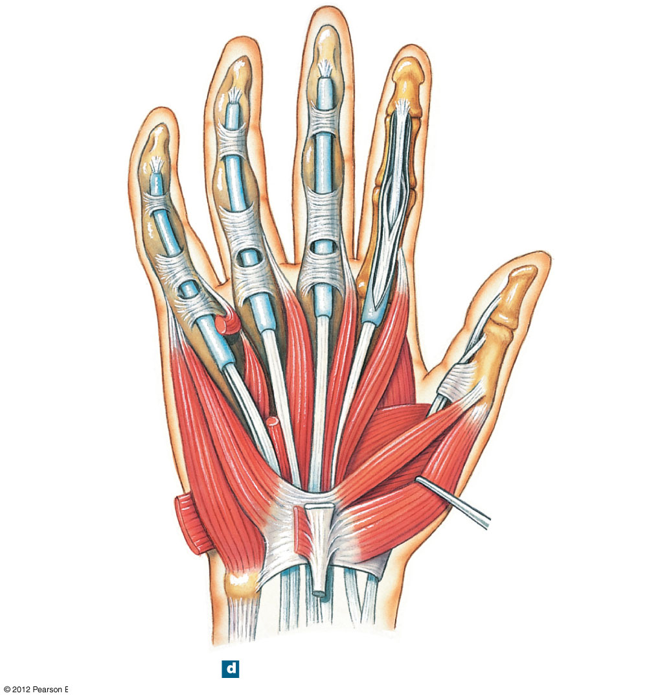
Blood supply and lymphatic drainage (upper limb): these muscles are supplied by branches of the subclavian → axillary → brachial arterial chain, with venous and lymphatic drainage following the arteries back toward the axillary lymph nodes.
3.10 · Objective 8 (appendicular) — Origin, insertion, innervation & supply of the pelvic girdle and lower limb
Lower-limb muscles are larger and more powerful than their upper-limb counterparts, split into three groups: muscles that move the thigh, the leg, and the foot/toes. Thigh movers originate on the pelvis and fall into four groups: the gluteal group (gluteus maximus extends the hip; gluteus medius/minimus and tensor fasciae latae abduct it), the lateral rotator group (piriformis, obturators, gemelli, quadratus femoris — mostly lateral rotation plus abduction), the adductor group (adductor brevis/longus/magnus, pectineus, gracilis), and the iliopsoas group (iliacus and psoas major, the primary hip flexors).
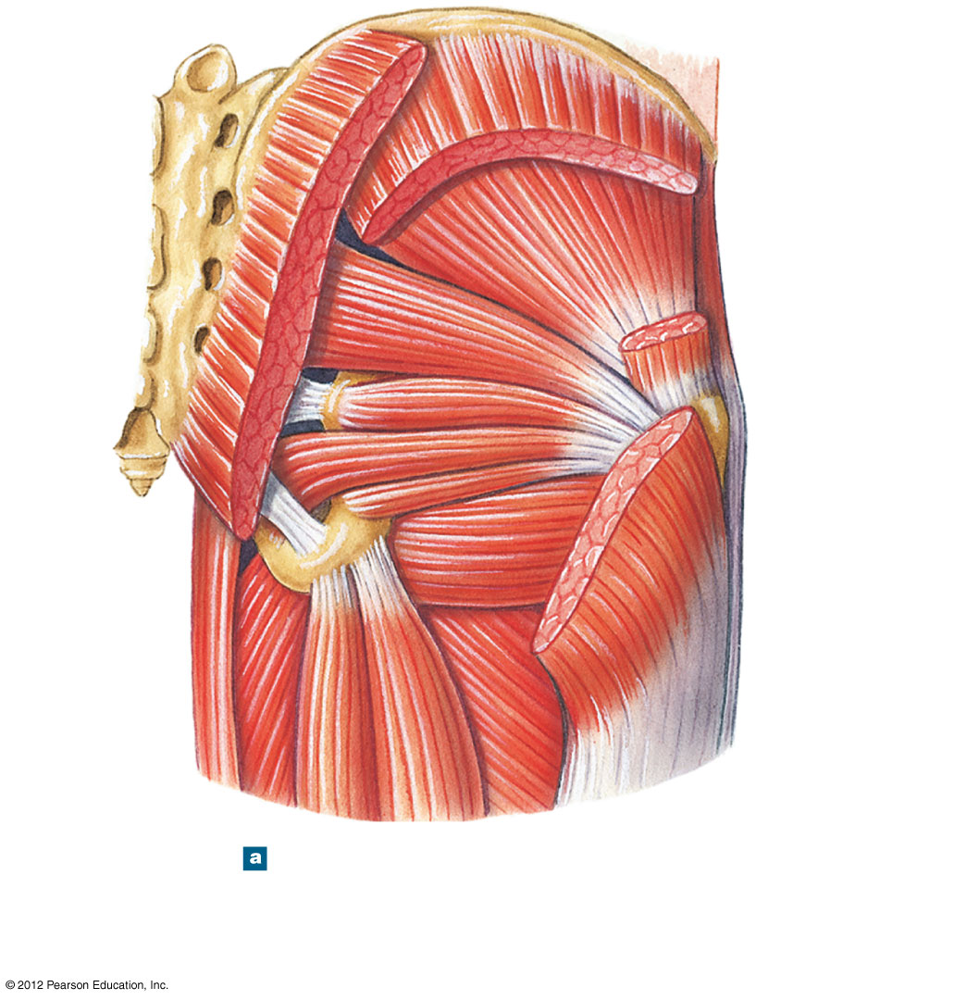
At the knee, the quadriceps femoris (vastus lateralis, medialis, intermedius, plus rectus femoris, which also flexes the hip) extends the leg, while the hamstrings (biceps femoris, semimembranosus, semitendinosus) flex the leg and extend the hip. Sartorius, the long strap-like muscle that lets you cross your legs, flexes both the hip and knee; together with gracilis and semitendinosus, it converges on the medial tibia to form the pes anserine.
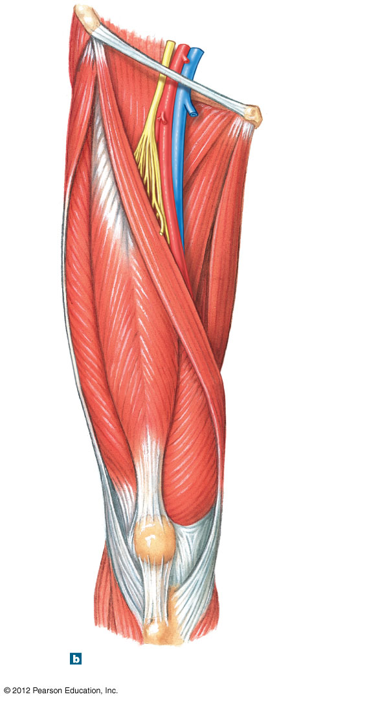
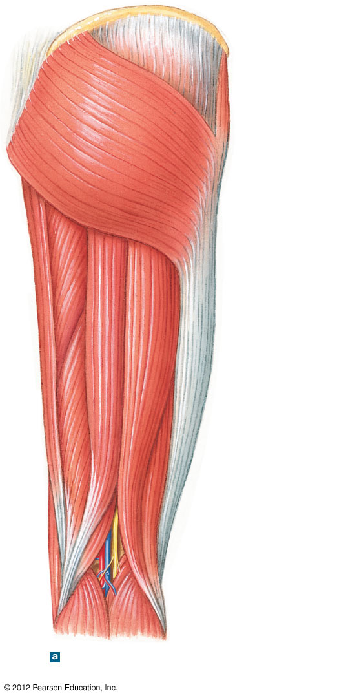
Below the knee, extrinsic muscles originating on the leg move the foot and toes: tibialis anterior dorsiflexes the foot, gastrocnemius/soleus (joined at the calcaneal/Achilles tendon) plantar-flex it, tibialis posterior plantar-flexes and inverts it, and fibularis longus/brevis evert it. Intrinsic foot muscles (abductor hallucis, flexor digitorum brevis, lumbricals, interossei, and others) mirror the hand's intrinsic layout, providing fine control of the toes.
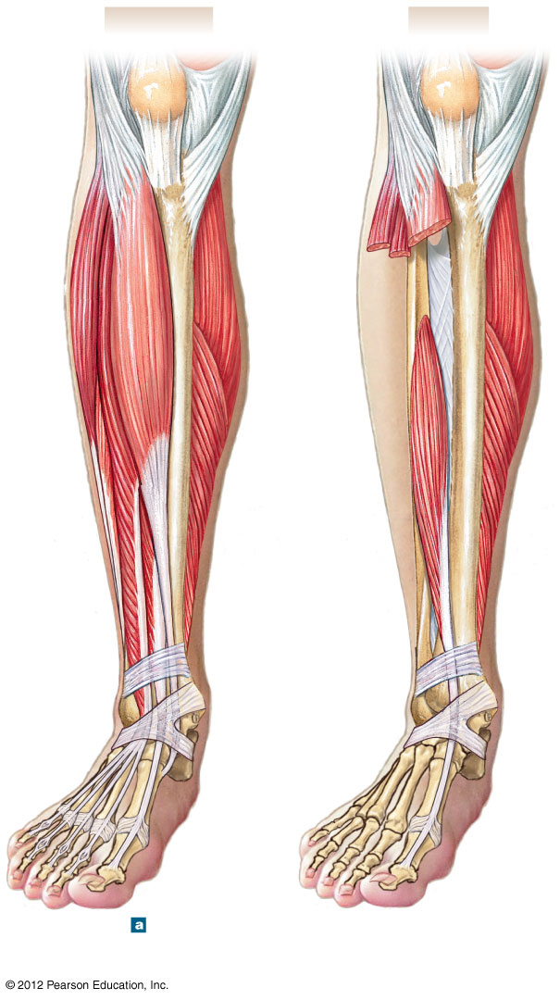
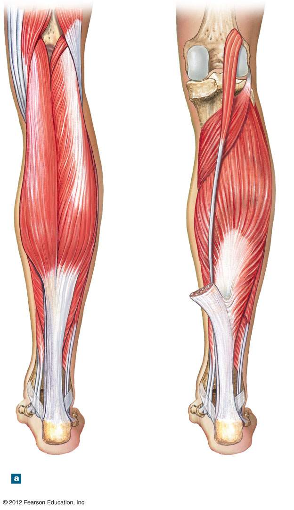
Fascial compartments group functionally related muscles within connective-tissue sheaths that still allow independent movement: the arm has anterior (biceps brachii, brachialis, coracobrachialis) and posterior (triceps brachii) compartments; the thigh has anterior/extensor (quadriceps, iliopsoas, sartorius), medial/adductor (the adductor group, gracilis), and posterior/flexor (hamstrings) compartments.
Blood supply and lymphatic drainage (lower limb): these muscles are supplied by branches of the femoral → popliteal arterial chain (with the gluteal region supplied by the internal iliac's gluteal arteries), and venous and lymphatic drainage follows the arteries toward the deep and superficial inguinal lymph nodes.
Muscle-by-Muscle Reference — Action, Insertion & Innervation
Every appendicular muscle named above, in one table, organized the same way the source lecture groups them.
| Muscle | Action | Insertion | Innervation |
|---|---|---|---|
| MUSCLES THAT POSITION THE PECTORAL GIRDLE | |||
| Levator scapulae | Elevates scapula | Vertebral border of scapula near superior angle and medial end of scapular spine | Cervical nerves C3-C4 and dorsal scapular nerve (C5) |
| Pectoralis minor | Depresses and protracts shoulder; rotates scapula so glenoid cavity moves inferiorly (downward rotation); elevates ribs if scapula is stationary | Coracoid process of scapula | Medial pectoral nerve (C8, T1) |
| Rhomboid major | Adducts and performs downward rotation of the scapula | Vertebral border of scapula from spine to inferior angle | Dorsal scapular nerve (C5) |
| Rhomboid minor | As above | Vertebral border of scapula | As above |
| Serratus anterior | Protracts shoulder; rotates scapula so glenoid cavity moves superiorly (upward rotation) | Anterior surface of vertebral border of scapula | Long thoracic nerve (C5-C7) |
| Subclavius | Depresses and protracts shoulder | Clavicle (inferior border of middle 1/3) | Nerve to subclavius (C5-C6) |
| Trapezius | Depends on active region and state of other muscles; may elevate, retract, depress, or rotate scapula upward and/or clavicle; can also extend neck when position of shoulder is fixed | Clavicle and scapula (acromion and scapular spine) | Accessory nerve (N XI) |
| MUSCLES THAT MOVE THE ARM | |||
| Coracobrachialis | Adduction and flexion at shoulder | Medial margin of shaft of humerus | Musculocutaneous nerve (C5-C7) |
| Deltoid | Whole muscle: abduction of shoulder; anterior part: flexion and medial rotation of humerus; posterior part: extension and lateral rotation of humerus | Deltoid tuberosity of humerus | Axillary nerve (C5-C6) |
| Supraspinatus | Abduction at shoulder | Greater tubercle of humerus | Suprascapular nerve (C5) |
| Infraspinatus | Lateral rotation at shoulder | Greater tubercle of humerus | Suprascapular nerve (C5-C6) |
| Subscapularis | Medial rotation at shoulder | Lesser tubercle of humerus | Subscapular nerve (C5-C6) |
| Teres major | Extension and medial rotation at shoulder | Medial lip of intertubercular sulcus of humerus | Lower subscapular nerve (C5-C6) |
| Teres minor | Lateral rotation and adduction at shoulder | Greater tubercle of humerus | Axillary nerve (C5) |
| Triceps brachii (long head) | Extension at elbow (see Table 11.3 for full triceps entry) | See Table 11.3 | See Table 11.3 |
| Biceps brachii | Flexion at elbow (see Table 11.3 for full biceps entry) | See Table 11.3 | See Table 11.3 |
| Latissimus dorsi | Extension, adduction, and medial rotation at shoulder | Floor of intertubercular sulcus of humerus | Thoracodorsal nerve (C6-C8) |
| Pectoralis major | Flexion, adduction, and medial rotation at shoulder | Crest of greater tubercle and lateral lip of intertubercular sulcus of humerus | Pectoral nerves (C5-T1) |
| ACTION AT THE ELBOW — FLEXORS | |||
| Biceps brachii | Flexion at elbow and shoulder; supination | Radial tuberosity | Musculocutaneous nerve (C5-C6) |
| Brachialis | Flexion at elbow | Ulnar tuberosity and coronoid process | Musculocutaneous and radial nerve (C7-C8) |
| Brachioradialis | Flexion at elbow | Lateral aspect of styloid process of radius | Radial nerve (C6-C8) |
| ACTION AT THE ELBOW — EXTENSORS | |||
| Anconeus | Extension at elbow | Lateral margin of olecranon and ulnar shaft | Radial nerve (C6-C8) |
| Triceps brachii — lateral head | Extension at elbow | Olecranon of ulna | Radial nerve (C6-C8) |
| Triceps brachii — long head | Extension at elbow, plus extension and adduction at shoulder | Olecranon of ulna | Radial nerve (C6-C8) |
| Triceps brachii — medial head | Extension at elbow | Olecranon of ulna | Radial nerve (C6-C8) |
| PRONATORS / SUPINATORS | |||
| Pronator quadratus | Pronates forearm and hand by medial rotation of radius at radioulnar joints | Anterolateral surface of distal portion of radius | Median nerve (C8-T1) |
| Pronator teres | As above, plus flexion at elbow | Middle of lateral surface of radius | Median nerve (C6-C7) |
| Supinator | Supinates forearm and hand by lateral rotation of radius at radioulnar joints | Anterolateral surface of radius distal to the radial tuberosity | Deep radial nerve (C6-C8) |
| ACTION AT THE WRIST — FLEXORS | |||
| Flexor carpi radialis | Flexion and abduction at wrist | Bases of second and third metacarpal bones | Median nerve (C6-C7) |
| Flexor carpi ulnaris | Flexion and adduction at wrist | Pisiform, hamate, and base of fifth metacarpal bone | Ulnar nerve (C8-T1) |
| Palmaris longus | Flexion at wrist | Palmar aponeurosis and flexor retinaculum | Median nerve (C6-C7) |
| ACTION AT THE WRIST — EXTENSORS | |||
| Extensor carpi radialis longus | Extension and abduction at wrist | Base of second metacarpal bone | Radial nerve (C6-C7) |
| Extensor carpi radialis brevis | As above | Base of third metacarpal bone | As above |
| Extensor carpi ulnaris | Extension and adduction at wrist | Base of fifth metacarpal bone | Deep radial nerve (C6-C8) |
| MUSCLES THAT MOVE THE HAND AND FINGERS | |||
| Abductor pollicis longus | Abduction at joints of thumb and wrist | Lateral margin of first metacarpal bone and trapezium | Deep radial nerve (C6-C7) |
| Extensor digitorum | Extension at finger joints and wrist | Posterior surfaces of the phalanges, digits 2-5 | Deep radial nerve (C6-C8) |
| Extensor pollicis brevis | Extension at joints of thumb; abduction at wrist | Base of proximal phalanx of thumb | Deep radial nerve (C6-C7) |
| Extensor pollicis longus | As above | Base of distal phalanx of thumb | Deep radial nerve (C6-C8) |
| Extensor indicis | Extension and adduction at joints of index finger | Posterior surface of proximal phalanx of index finger, with tendon of extensor digitorum | Deep radial nerve (C6-C8) |
| Extensor digiti minimi | Extension at joints of little finger; extension at wrist | Posterior surface of proximal phalanx of little finger | Deep radial nerve (C6-C8) |
| Flexor digitorum superficialis | Flexion at proximal interphalangeal, metacarpophalangeal, and wrist joints | Bases of middle phalanges of digits 2-5 | Median nerve (C7-T1) |
| Flexor digitorum profundus | Flexion at distal interphalangeal joints, and to a lesser degree proximal interphalangeal joints and wrist | Bases of distal phalanges of digits 2-5 | Anterior interosseous branch of median nerve and ulnar nerve (C8-T1) |
| Flexor pollicis longus | Flexion at joints of thumb | Base of distal phalanx of thumb | Median nerve (C8-T1) |
| INTRINSIC MUSCLES OF THE HAND | |||
| Adductor pollicis | Adduction of thumb | Proximal phalanx of thumb | Ulnar nerve, deep branch (C8-T1) |
| Opponens pollicis | Opposition of thumb | First metacarpal bone | Median nerve (C6-C7) |
| Palmaris brevis | Moves skin on medial border toward midline of palm | Skin of medial border of hand | Ulnar nerve, superficial branch (C8) |
| Abductor digiti minimi (hand) | Abduction of little finger and flexion at its metacarpophalangeal joint | Proximal phalanx of little finger | Ulnar nerve, deep branch (C8-T1) |
| Abductor pollicis brevis | Abduction of thumb | Radial side of base of proximal phalanx of thumb | Median nerve (C6-C7) |
| Flexor pollicis brevis | Flexion and adduction of thumb | Radial and ulnar sides of proximal phalanx of thumb | Branches of median and ulnar nerves |
| Flexor digiti minimi brevis (hand) | Flexion at fifth metacarpophalangeal joint | Proximal phalanx of little finger | Ulnar nerve, deep branch (C8-T1) |
| Opponens digiti minimi | Flexion at metacarpophalangeal joint; brings digit into opposition with thumb | Fifth metacarpal bone | Ulnar nerve, deep branch (C8-T1) |
| Lumbricals (4, hand) | Flexion at metacarpophalangeal joints; extension at proximal and distal interphalangeal joints | Tendons of extensor digitorum to digits 2-5 | No. 1 & 2 by median nerve; no. 3 & 4 by ulnar nerve, deep branch |
| Dorsal interossei (4, hand) | Abduction at metacarpophalangeal joints of digits 2-4; flexion at metacarpophalangeal joints; extension at interphalangeal joints | Bases of proximal phalanges of digits 2-4 | Ulnar nerve, deep branch (C8-T1) |
| Palmar interossei (4, hand) | Adduction at metacarpophalangeal joints of digits 2, 4, 5; flexion at metacarpophalangeal joints; extension at interphalangeal joints | Bases of proximal phalanges of digits 2, 4, 5 | Ulnar nerve, deep branch (C8-T1) |
| GLUTEAL GROUP | |||
| Gluteus maximus | Extension and lateral rotation at hip; helps stabilize the extended knee; abduction at hip (superior fibers only) | Iliotibial tract and gluteal tuberosity of femur | Inferior gluteal nerve (L5-S2) |
| Gluteus medius | Abduction and medial rotation at hip | Greater trochanter of femur | Superior gluteal nerve (L4-S1) |
| Gluteus minimus | As above | Greater trochanter of femur | As above |
| Tensor fasciae latae | Abduction and medial rotation at hip; extension and lateral rotation at knee; tenses fasciae latae | Iliotibial tract | Superior gluteal nerve (L4-S1) |
| LATERAL ROTATOR GROUP | |||
| Obturators (externus and internus) | Lateral rotation and abduction of hip | Trochanteric fossa of femur (externus); medial surface of greater trochanter (internus) | Obturator nerve (externus, L3-L4) and nerve from sacral plexus (internus, L5-S2) |
| Piriformis | As above | Greater trochanter of femur | Branches of sacral nerves (S1-S2) |
| Gemelli (superior and inferior) | As above | Medial surface of greater trochanter via tendon of obturator internus | Nerves to obturator internus and quadratus femoris |
| Quadratus femoris | Lateral rotation of hip | Intertrochanteric crest of femur | Special nerves from sacral plexus (L4-S1) |
| ADDUCTOR GROUP | |||
| Adductor brevis | Adduction and flexion at hip | Linea aspera of femur | Obturator nerve (L3-L4) |
| Adductor longus | Adduction, flexion, and medial rotation at hip | Linea aspera of femur | Obturator nerve (L3-L4) |
| Adductor magnus | Whole muscle produces adduction at hip; anterior part produces flexion and medial rotation; posterior part produces extension | Linea aspera and adductor tubercle of femur | Obturator and sciatic nerves |
| Pectineus | Flexion and adduction at hip | Pectineal line inferior to lesser trochanter of femur | Femoral nerve (L2-L4) |
| Gracilis | Flexion and medial rotation at knee; adduction and medial rotation at hip | Medial surface of tibia inferior to medial condyle | Obturator nerve (L3-L4) |
| ILIOPSOAS GROUP | |||
| Iliacus | Flexion at hip and/or lumbar intervertebral joints | Femur distal to lesser trochanter; tendon fused with that of psoas major | Femoral nerve (L2-L3) |
| Psoas major | As above | Lesser trochanter in company with iliacus | Branches of the lumbar plexus (L2-L3) |
| FLEXORS OF THE KNEE | |||
| Biceps femoris | Flexion at knee; extension and lateral rotation at hip | Head of fibula, lateral condyle of tibia | Sciatic nerve; tibial portion (S1-S3, long head) and common fibular branch (L5-S2, short head) |
| Semimembranosus | Flexion at knee; extension and medial rotation at hip | Posterior surface of medial condyle of tibia | Sciatic nerve, tibial portion (L5-S2) |
| Semitendinosus | As above | Proximal, medial surface of tibia near insertion of gracilis | As above |
| Sartorius | Flexion at knee; abduction, flexion, and lateral rotation at hip | Medial surface of tibia near tibial tuberosity | Femoral nerve (L2-L3) |
| Popliteus | Medial rotation of tibia (or lateral rotation of femur) at knee; flexion at knee | Posterior surface of proximal tibial shaft | Tibial nerve (L4-S1) |
| EXTENSORS OF THE KNEE (QUADRICEPS) | |||
| Rectus femoris | Extension at knee; flexion at hip | Tibial tuberosity via quadriceps tendon, patella, and patellar ligament | Femoral nerve (L2-L4) |
| Vastus intermedius | Extension at knee | As above | As above |
| Vastus lateralis | As above | As above | As above |
| Vastus medialis | As above | As above | As above |
| ACTION AT THE ANKLE — DORSIFLEXORS | |||
| Tibialis anterior | Dorsiflexion at ankle; inversion of foot | Base of first metatarsal bone and medial cuneiform | Deep fibular nerve (L4-S1) |
| ACTION AT THE ANKLE — PLANTAR FLEXORS | |||
| Gastrocnemius | Plantar flexion at ankle; flexion at knee | Calcaneus via calcaneal (Achilles) tendon | Tibial nerve (S1-S2) |
| Fibularis brevis | Eversion of foot and plantar flexion at ankle | Base of fifth metatarsal bone | Superficial fibular nerve (L4-S1) |
| Fibularis longus | Eversion of foot and plantar flexion at ankle; supports longitudinal and transverse arches | Base of first metatarsal bone and medial cuneiform | Superficial fibular nerve (L4-S1) |
| Plantaris | Plantar flexion at ankle; flexion at knee | Posterior portion of calcaneus | Tibial nerve (L4-S1) |
| Soleus | Plantar flexion at ankle; postural muscle when standing | Calcaneus via calcaneal (Achilles) tendon (with gastrocnemius) | Sciatic nerve, tibial branch (S1-S2) |
| Tibialis posterior | Inversion of foot; plantar flexion at ankle | Navicular, all three cuneiforms, cuboid, second, third, and fourth metatarsal bones | Tibial nerve |
| ACTION AT THE TOES — DIGITAL FLEXORS | |||
| Flexor digitorum longus | Flexion of joints of toes 2-5; plantar flexes ankle | Inferior surface of distal phalanges, toes 2-5 | Tibial nerve branch (L5-S1) |
| Flexor hallucis longus | Flexion at joints of great toe; plantar flexes ankle | Inferior surface, distal phalanx of great toe | Tibial nerve branch (L5-S1) |
| ACTION AT THE TOES — DIGITAL EXTENSORS | |||
| Extensor digitorum longus | Extension of toes 2-5; dorsiflexes ankle | Superior surfaces of phalanges, toes 2-5 | Deep fibular nerve (L5-S1) |
| Extensor hallucis longus | Extension at joints of great toe; dorsiflexes ankle | Superior surface, distal phalanx of great toe | Deep fibular nerve (L5-S1) |
| INTRINSIC MUSCLES OF THE FOOT | |||
| Extensor digitorum brevis | Extension at metatarsophalangeal joints of toes 1-4 | Dorsal surface of toes 1-4 | Deep fibular nerve (S1, S2) |
| Abductor hallucis | Abduction at metatarsophalangeal joint of great toe | Medial side of proximal phalanx of great toe | Medial plantar nerve (S2, S3) |
| Flexor digitorum brevis | Flexion of proximal interphalangeal joints of toes 2-5 | Sides of middle phalanges, toes 2-5 | Medial plantar nerve (S2, S3) |
| Abductor digiti minimi (foot) | Abduction and flexion at metatarsophalangeal joint of toe 5 | Lateral side of proximal phalanx, toe 5 | Lateral plantar nerve (S2, S3) |
| Quadratus plantae | Flexion at joints of toes 2-5 | Tendon of flexor digitorum longus | Lateral plantar nerve (S2, S3) |
| Lumbricals (4, foot) | Flexion at metatarsophalangeal joints; extension at interphalangeal joints of toes 2-5 | Insertions of extensor digitorum longus | Medial plantar nerve (1), lateral plantar nerve (2-4) |
| Flexor hallucis brevis | Flexion at metatarsophalangeal joint of great toe | Proximal phalanx of great toe | Medial plantar nerve (L4-S5) |
| Adductor hallucis | Adduction and flexion at metatarsophalangeal joint of great toe | As above (proximal phalanx of great toe) | Lateral plantar nerve (S1-S2) |
| Flexor digiti minimi brevis (foot) | Flexion at metatarsophalangeal joint of toe 5 | Lateral side of proximal phalanx of toe 5 | Lateral plantar nerve (as above) |
| Dorsal interossei (4, foot) | Abduction at metatarsophalangeal joints of toes 3 and 4; flexion of metatarsophalangeal joints and extension at interphalangeal joints of toes 2-4 | Medial and lateral sides of toe 2; lateral sides of toes 3 and 4 | Lateral plantar nerve (as above) |
| Plantar interossei (3, foot) | Adduction of metatarsophalangeal joints of toes 3-5; flexion of metatarsophalangeal joints and extension at interphalangeal joints | Medial sides of toes 3-5 | Lateral plantar nerve (as above) |
4 · Axial Musculature
Instructional Objectives
This is the second half of the combined Axial & Appendicular Musculature objective set. Muscle-tissue fundamentals (Objectives 1–7 and 9) are established in Section 3; this section completes Objective 8 — origin, insertion, innervation, blood supply, and lymphatic drainage — for the axial muscles of the head, neck, vertebral column, thorax, and pelvic floor.
- Compare and contrast the connective tissue coverings of muscles.
- Describe the components of muscle.
- Compare and contrast the histology of the three types of muscle tissue.
- Differentiate between the axial and appendicular muscles.
- Compare and contrast the different morphologies of muscles.
- Compare and contrast the anatomical structures that are involved in muscle contraction.
- Describe the structures that make up the neuromuscular junction.
- Identify origin, insertion, innervation, blood supply, and lymphatic drainage of muscles.
- Describe the innervation of striated muscle.
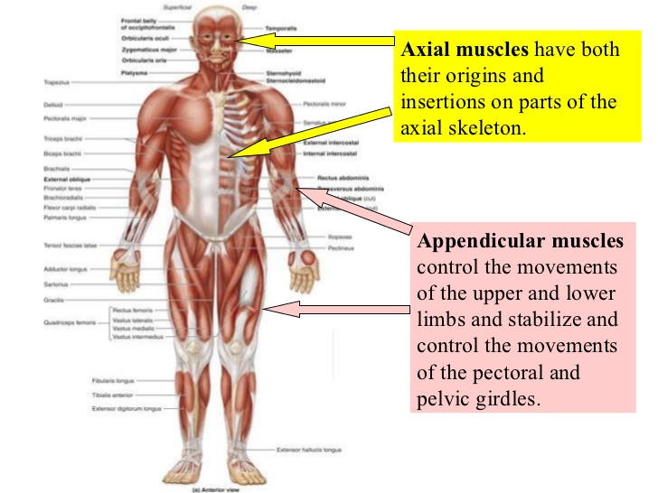
4.1 · Objective 8 (axial) — Muscles of the head and neck
The muscles of facial expression are all innervated by the facial nerve (CN VII) and are grouped by the region of the face they act on: mouth (orbicularis oris purses the lips; zygomaticus major/minor elevate the corner of the mouth; buccinator compresses the cheeks; risorius, mentalis, depressor labii inferioris, depressor anguli oris, levator labii superioris round out the group), eyes (orbicularis oculi closes the eye; corrugator supercilii furrows the brow; levator palpebrae superioris elevates the eyelid — its dysfunction causes ptosis, and unlike the others it's innervated by CN III), nose (procerus, nasalis), scalp (occipitofrontalis, temporoparietalis), and neck (platysma).
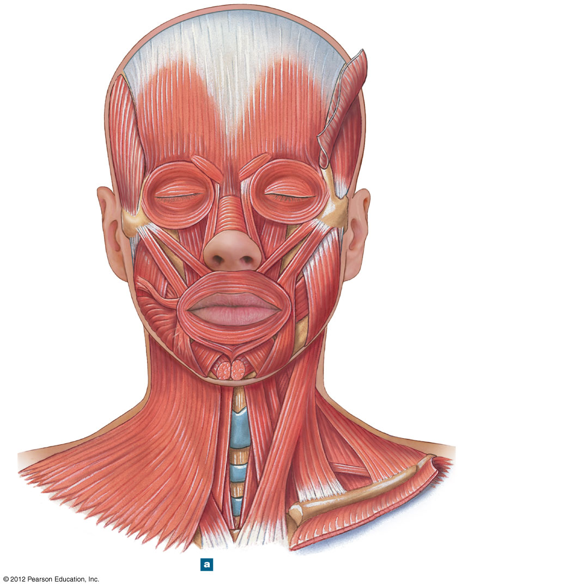
The four muscles of mastication — masseter, temporalis, and medial pterygoid (all close/elevate the jaw) plus lateral pterygoid (the lone jaw-opener) — are all innervated by the mandibular branch of the trigeminal nerve (CN V). The temporalis passes medial to the zygomatic arch to insert on the mandible's coronoid process; the masseter inserts on the mandibular angle.
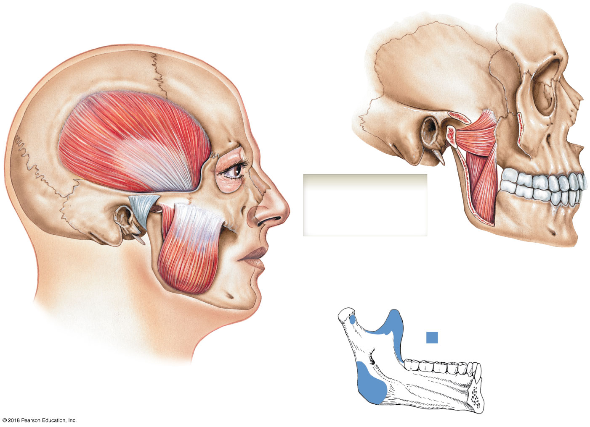
The six extra-ocular muscles follow the classic "LR6 SO4 3" innervation rule: the lateral rectus (abducts the eye) is innervated by CN VI, the superior oblique (rotates the eye down and out) by CN IV, and the remaining four — medial rectus, superior rectus, inferior rectus, inferior oblique — by CN III. Tongue muscles (genioglossus, hyoglossus, styloglossus) are innervated by CN XII, except palatoglossus, which is innervated by CN X. In the neck, the sternocleidomastoid (CN XI) flexes the neck when both sides contract together and rotates the head to the opposite side when acting alone, while the infrahyoid/suprahyoid muscles (omohyoid, sternohyoid, sternothyroid, thyrohyoid, digastric, mylohyoid) position the hyoid and larynx. The pharyngeal constrictors (CN X), laryngeal elevators (CN IX & X), and palatal muscles (CN V & X) round out the swallowing musculature.
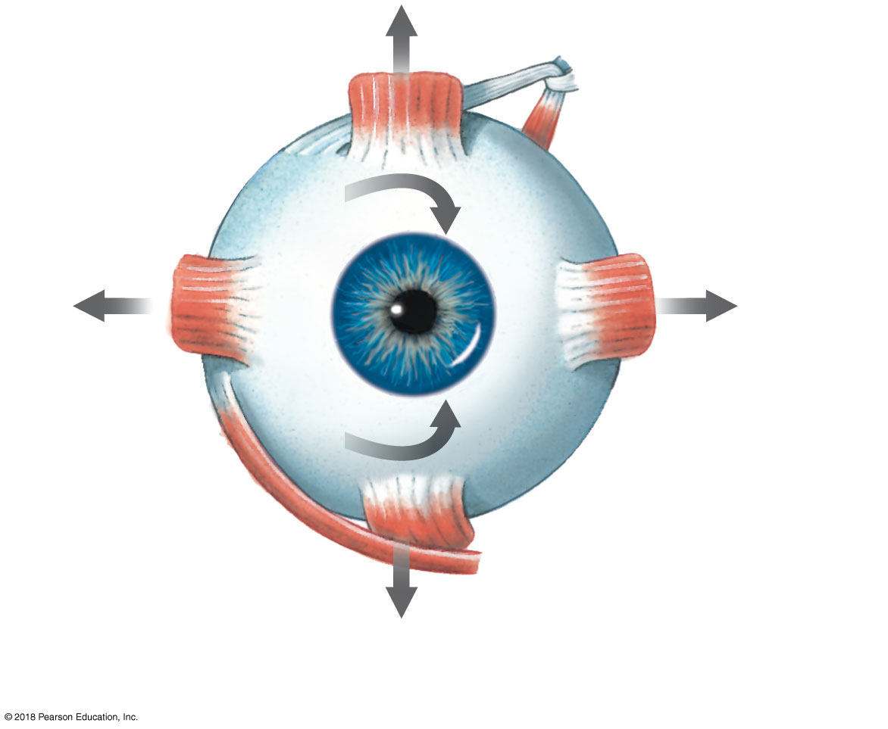
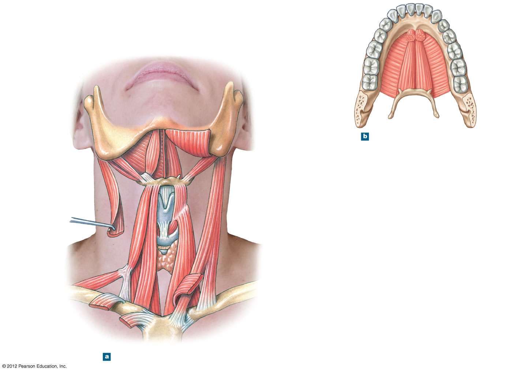
4.2 · Objective 8 (axial) — Muscles of the vertebral column, rib cage & pelvic floor
Back muscles come in two broad categories. Extrinsic back muscles — really appendicular muscles that happen to attach the limbs to the trunk — form a superficial layer (trapezius, latissimus dorsi, levator scapulae, rhomboids) and an intermediate layer (serratus posterior superior/inferior, which elevate/depress the ribs for ventilation). Intrinsic back muscles are the true "deep back" muscles, subdivided into superficial, intermediate, and deep layers that together flex, extend, and laterally stabilize the spine — because they act as a functional group, dysfunction of one usually can't be pinpointed clinically. The intermediate layer's erector spinae group (spinalis, longissimus, iliocostalis — medial to lateral) extends the column, while the deep layer (multifidus, rotatores, interspinales, intertransversarii) fine-tunes extension, rotation, and lateral flexion. Anteriorly, longus capitis/colli flex and rotate the neck, and quadratus lumborum laterally flexes the lumbar spine.
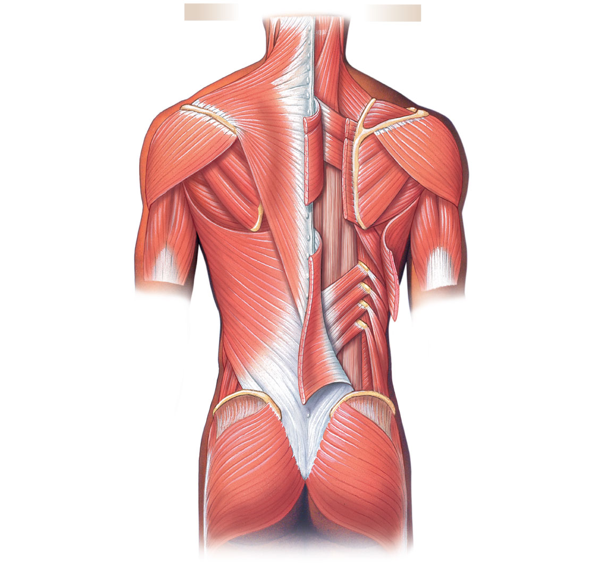
The rib cage and abdominal wall use opposing muscle pairs to drive ventilation and support the trunk: the external intercostals elevate the ribs (inhalation) while the internal intercostals depress them (exhalation), assisted by the scalene muscles (elevate) and transversus thoracis (depress). The diaphragm, innervated by the phrenic nerves (C3–C5), is the major muscle of inhalation: it contracts and flattens/descends to increase thoracic volume on inhalation, then relaxes and rises on exhalation. The abdominal wall's external oblique, internal oblique, and transversus abdominis compress the abdomen (the obliques also depress the ribs and laterally flex the trunk), while the midline rectus abdominis — bounded by the linea alba and segmented by tendinous inscriptions — flexes the vertebral column and depresses the ribs.
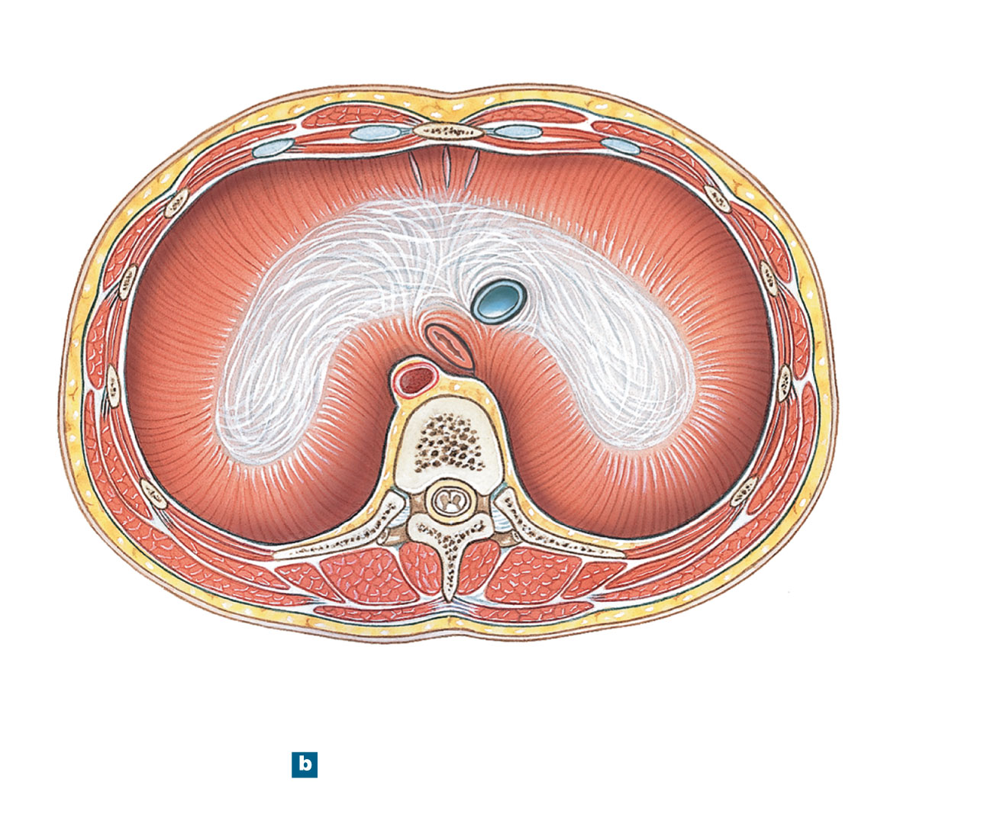
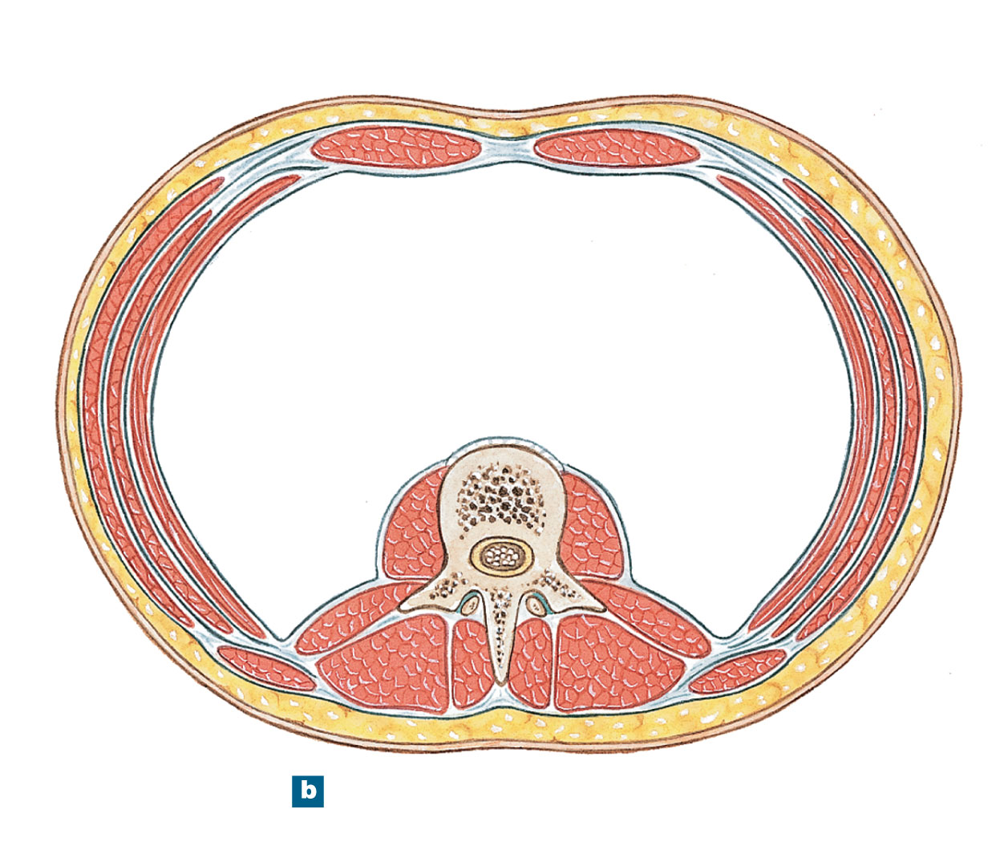
The pelvic floor supports the pelvic organs, flexes the sacrococcygeal joints, and controls the passage of urine and stool; because its individual muscles can't be told apart clinically, dysfunction is worked up by imaging (innervation is S2–S4). The perineum splits into an anterior urogenital triangle (superficial transverse perineal, ischiocavernosus, bulbospongiosus; deep transverse perineal, external urethral sphincter) and a posterior anal triangle (levator ani — its iliococcygeus and pubococcygeus parts — plus coccygeus, obturator internus, and the external anal sphincter), separated by the superficial transverse perineal muscle. Levator ani and coccygeus together form the bulk of the pelvic diaphragm, the muscular floor of the entire pelvic cavity.
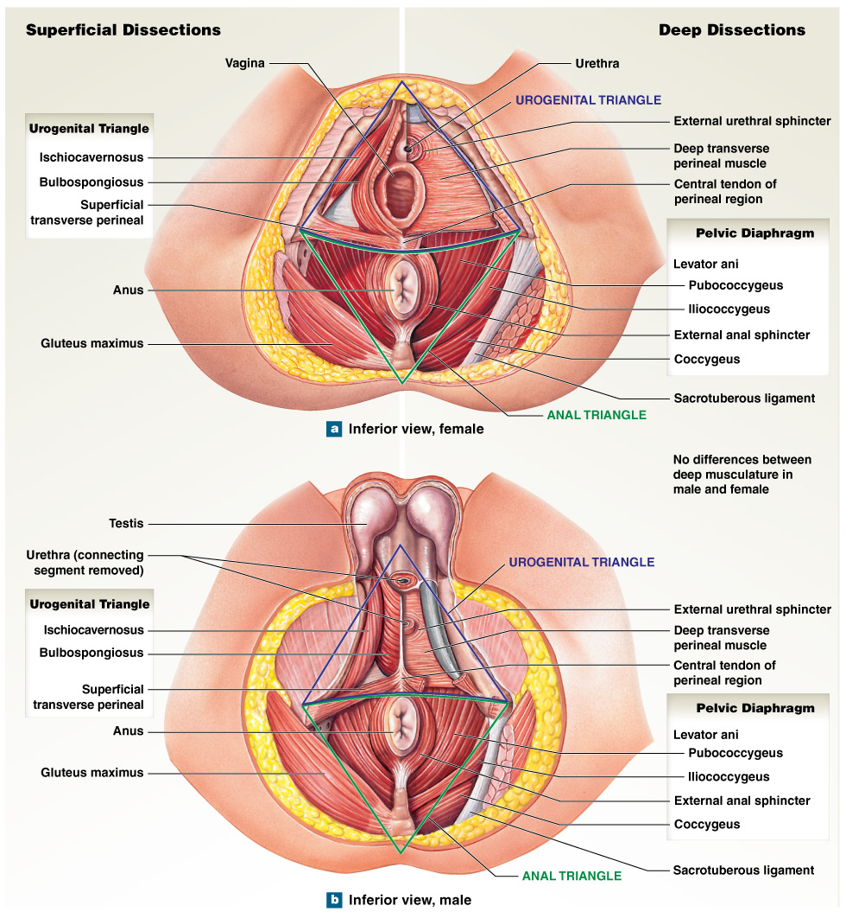
Blood supply and lymphatic drainage (axial muscles): the head and neck muscles are supplied by branches of the external carotid artery (facial, maxillary, occipital, superficial temporal) draining to the cervical lymph nodes; the thoracic and abdominal wall muscles are supplied by posterior intercostal, subcostal, and lumbar arteries draining to parasternal, axillary, and lumbar nodes; and the pelvic floor is supplied by branches of the internal iliac artery draining to internal iliac and sacral nodes.
Muscle-by-Muscle Reference — Action, Insertion & Innervation
Every axial muscle named above (facial expression, mastication, anterior neck, perineum, and pelvic diaphragm — the muscle groups with dedicated origin/insertion/action/innervation tables in the source lecture), organized the same way.
| Muscle | Action | Insertion | Innervation |
|---|---|---|---|
| MOUTH | |||
| Buccinator | Compresses cheeks | Blends into fibers of orbicularis oris | Facial nerve (N VII) |
| Depressor labii inferioris | Depresses and helps evert lower lip | Skin of lower lip | Facial nerve (N VII) |
| Levator labii superioris | Elevates and everts upper lip | Orbicularis oris | Facial nerve (N VII) |
| Mentalis | Elevates, everts, and protrudes lower lip | Skin of chin | Facial nerve (N VII) |
| Orbicularis oris | Compresses, purses lips | Lips | Facial nerve (N VII) |
| Risorius | Draws corner of mouth laterally | Angle of mouth | Facial nerve (N VII) |
| Levator anguli oris | Raises corner of mouth | Skin at angle of mouth | Facial nerve (N VII) |
| Depressor anguli oris | Depresses and draws corner of mouth laterally | Skin at angle of mouth | Facial nerve (N VII) |
| Zygomaticus major | Elevates corner of mouth and draws it laterally | Angle of mouth | Facial nerve (N VII) |
| Zygomaticus minor | Elevates upper lip | Upper lip | Facial nerve (N VII) |
| EYE | |||
| Corrugator supercilii | Pulls skin inferiorly and medially; wrinkles brow | Eyebrow | Facial nerve (N VII) |
| Levator palpebrae superioris | Elevates upper eyelid | Upper eyelid | Oculomotor nerve (N III) — unusual innervation for a facial-expression-table muscle since it originates with the extra-ocular muscles |
| Orbicularis oculi | Closes eye | Skin around eyelids | Facial nerve (N VII) |
| NOSE | |||
| Procerus | Moves nose, changes position/shape of nostrils; draws medial angle of eyebrows inferiorly | Aponeurosis at bridge of nose and skin of forehead | Facial nerve (N VII) |
| Nasalis | Compresses bridge, depresses tip of nose; elevates corners of nostrils | Bridge of nose | Facial nerve (N VII) |
| SCALP (EPICRANIUM) | |||
| Occipitofrontalis — frontal belly | Raises eyebrows, wrinkles forehead | Skin of eyebrow and bridge of nose | Facial nerve (N VII) |
| Occipitofrontalis — occipital belly | Tenses and retracts scalp | Epicranial aponeurosis | Facial nerve (N VII) |
| Temporoparietalis | Tenses scalp, moves auricle of ear | Epicranial aponeurosis | Facial nerve (N VII) |
| NECK (FACIAL EXPRESSION) | |||
| Platysma | Tenses skin of neck, depresses mandible | Mandible and skin of cheek | Facial nerve (N VII) |
| MUSCLES OF MASTICATION | |||
| Masseter | Elevates mandible and closes jaws; assists in protracting/retracting mandible and moving it side to side | Lateral surface and angle of mandibular ramus | Trigeminal nerve (N V), mandibular branch |
| Temporalis | Elevates mandible and closes jaws; assists in retracting and moving mandible side to side | Coronoid process of mandible and anterior border of mandibular ramus | Trigeminal nerve (N V), mandibular branch |
| Medial pterygoid | Elevates the mandible and closes the jaws, or moves mandible side to side | Medial surface of mandibular ramus | Trigeminal nerve (N V), mandibular branch |
| Lateral pterygoid | Opens jaws, protrudes mandible, or moves mandible side to side | Anterior part of the neck of the mandibular condyle | Trigeminal nerve (N V), mandibular branch |
| ANTERIOR MUSCLES OF THE NECK | |||
| Digastric — anterior belly | Depresses mandible (opens mouth) and/or elevates larynx | Hyoid bone | Trigeminal nerve (N V), mandibular branch |
| Digastric — posterior belly | As above | Hyoid bone | Facial nerve (N VII) |
| Geniohyoid | Depresses mandible / elevates larynx; retracts hyoid bone | Hyoid bone | Cervical nerve C1 via hypoglossal nerve (N XII) |
| Mylohyoid | Elevates floor of mouth, elevates hyoid bone, and/or depresses mandible | Median connective tissue band (raphe) to hyoid bone | Trigeminal nerve (N V), mandibular branch |
| Omohyoid | Depresses hyoid bone and larynx | Hyoid bone | Cervical spinal nerves C2-C3 |
| Sternohyoid | As above | Hyoid bone | Cervical spinal nerves C1-C3 |
| Sternothyroid | As above | Thyroid cartilage of larynx | Cervical spinal nerves C1-C3 |
| Stylohyoid | Elevates larynx | Hyoid bone | Facial nerve (N VII) |
| Thyrohyoid | Elevates larynx, depresses hyoid bone | Hyoid bone | Cervical spinal nerves C1-C2 via hypoglossal nerve (N XII) |
| Sternocleidomastoid | Together: flex the neck; alone: bends neck toward shoulder on that side and turns face to the opposite side | Mastoid region of skull and lateral portion of superior nuchal line | Accessory nerve (N XI) and cervical spinal nerves (C2-C3) |
| MUSCLES OF THE PERINEUM — UROGENITAL TRIANGLE, SUPERFICIAL | |||
| Bulbospongiosus (male) | Compresses base, stiffens penis, ejects urine or semen | Corpus spongiosum, perineal membrane, and corpus cavernosum | Pudendal nerve, perineal branch (S2-S4) |
| Bulbospongiosus (female) | Compresses and stiffens clitoris, narrows vaginal opening | Bulb of vestibule, perineal membrane, body of clitoris, corpus cavernosum | Pudendal nerve, perineal branch (S2-S4) |
| Ischiocavernosus | Compresses and stiffens penis or clitoris, helping maintain erection | Corpus cavernosum of penis or clitoris (also ischiopubic ramus in females) | Pudendal nerve, perineal branch (S2-S4) |
| Superficial transverse perineal | Stabilizes central tendon of perineum | Central tendon of perineum | Pudendal nerve, perineal branch (S2-S4) |
| MUSCLES OF THE PERINEUM — UROGENITAL TRIANGLE, DEEP | |||
| Deep transverse perineal | As above (stabilizes central tendon) | Median raphe of urogenital diaphragm | Pudendal nerve, perineal branch (S2-S4) |
| External urethral sphincter (male) | Closes urethra; compresses prostate and bulbo-urethral glands | Median raphe at base of penis; inner fibers encircle urethra | Pudendal nerve, perineal branch (S2-S4) |
| External urethral sphincter (female) | Closes urethra; compresses vagina and greater vestibular glands | Median raphe; inner fibers encircle urethra | Pudendal nerve, perineal branch (S2-S4) |
| MUSCLES OF THE PELVIC DIAPHRAGM — ANAL TRIANGLE | |||
| Coccygeus | Flexes coccygeal joints; elevates and supports pelvic floor | Lateral, inferior borders of the sacrum and coccyx | Inferior sacral nerves (S4-S5) |
| Levator ani — iliococcygeus | Tenses floor of pelvis, supports pelvic organs, flexes coccygeal joints, elevates and retracts anus | Coccyx and median raphe | Pudendal nerve (S2-S4) |
| Levator ani — pubococcygeus | As above | Coccyx and median raphe | Pudendal nerve (S2-S4) |
| External anal sphincter | Closes anal opening | Encircles anal opening | Pudendal nerve; hemorrhoidal branch (S2-S4) |